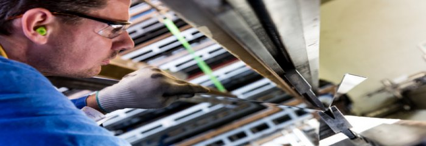
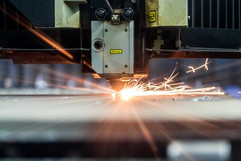
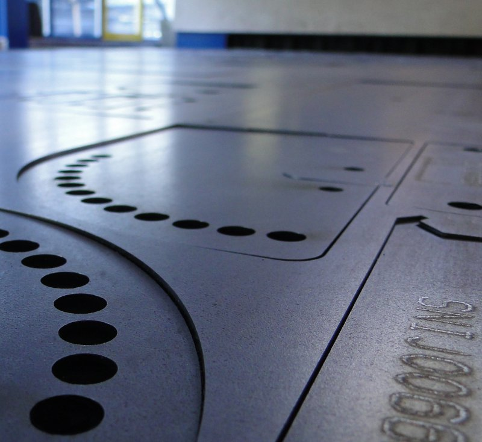

Toonaangevend en innovatief
+31(0)321 332 682
Gicom BV, Oogstweg 9, 8256 SB Biddinghuizen, The Netherlands
GICOM is een veelzijdig en ervaren metaalbewerkingsbedrijf in Biddinghuizen, Flevoland waar vakmanschap, hightech engineering en geavanceerde productiemachines ervoor zorgen dat ieder product van ontwerp tot aflevering voldoet aan de hoogste kwaliteitseisen. GICOM Metaalbewerking is het adres voor het lasersnijden, kanten, zetten, walsen en langsnaadlassen van uw plaatwerk!
Plaatwerk lasersnijden, kanten en zetten, walsen en langsnaadlassen
Bent u op zoek naar een leverancier voor het kanten en lasersnijden? Of zoekt u een ruim assortiment aan plaatwerk in een specifiek formaat of van groot formaat? Van enkele tot series producten, halffabricaten en complete installaties van staal, RVS en aluminium. Ook een perfecte afronding middels kantenbreken of het walsen van groot plaatwerk behoren tot één van onze technieken. Bij GICOM Metaalbewerking kunt u terecht voor ieder ontwerp, in ieder formaat en alles op maat gemaakt!
RVS, staal en aluminium op voorraad
Door de moderne en ruime productieruimte van 6500 m2 en de breed uitgeruste voorraad aan plaatwerk en andere materialen is het mogelijk om een ontwerp te realiseren en af te leveren binnen korte levertijden.Van kanten tot 6 meter of lasersnijden tot 6 meter, platen walsen en kantenbreken, GICOM Metaalbewerking heeft de expertise in huis.
De technieken van GICOM op een rij:
Van ontwerp tot levering, alles onder één dak
Vanuit onze vestiging in Biddinghuizen, nabij Dronten, kunnen wij door heel Nederland leveren. Wij beschikken over eigen transport, waardoor we snel en flexibel kunnen schakelen.
IJzersterk vakmanschap in elke vorm en elk formaat. Altijd maatwerk van de hoogste kwaliteit bij GICOM Metaalbewerking.
Voor meer informatie, neem dan gerust contact met ons op.